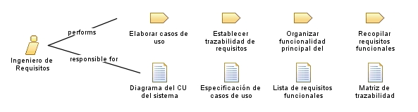

| Role: Ingeniero de Requisitos |
 |
|
Relationships
 |
||
| Primary Performs | ||
|---|---|---|
| Modifies |
|
|
Main Description
| Se encarga de recolectar, analizar, validar y documentar los requisitos del sistema. Asegura que las necesidades de los stakeholders se traduzcan en funcionalidades. |
Staffing
| Skills | Especificación de requisitos, Modelado, Trazabilidad |
|---|